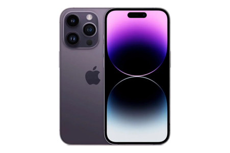
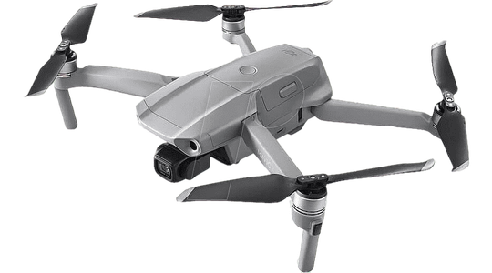
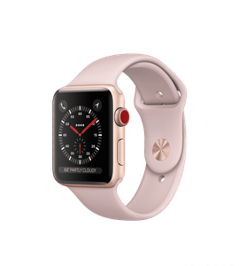
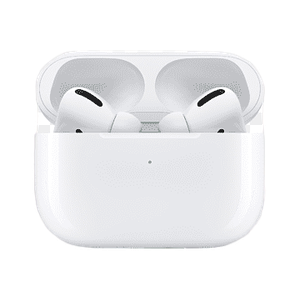
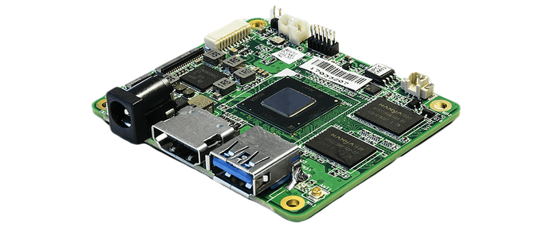
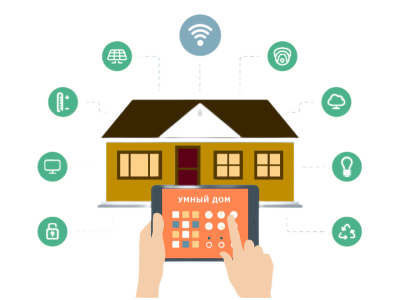
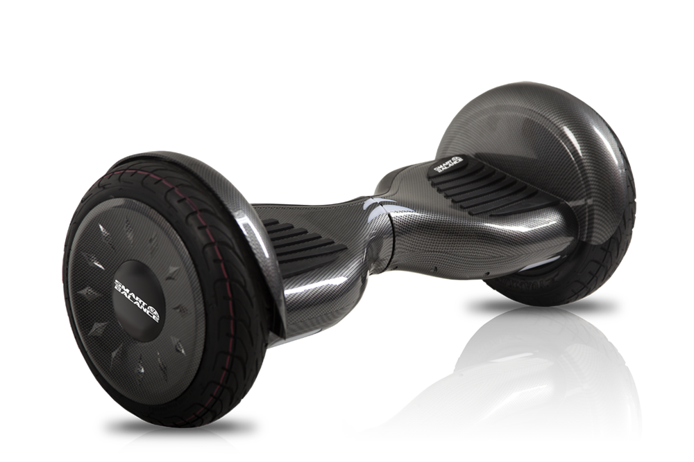

Гаджеты 21 века
Здесь мы рассказываем о последних новинках в мире технологий. Если вы увлечены всем, что связано
с гаджетами, то вы попали по адресу. На нашем новостном портале вы найдете интересные статьи, полезные
обзоры и всю необходимую информацию о самых полезных гаджетах настоящего и будущего.
Готовы к захватывающему путешествию по миру гаджетов? Тогда давайте начнем!
Смартфоны

Смартфон — это мобильное устройство, которое объединяет в себе функции телефона и компьютера.
Этот тип телефона обычно оснащен широким диапазоном возможностей, предоставляющих пользователю
доступ к различным функциям и приложениям. Они являются одними из ключевых и влиятельных гаджетов
21 века, переформатировав наш образ жизни и став незаменимой частью повседневной рутины.
Причина этому огромный охват функций, которые этот маленький гаджет модет выполнять. Смартфон может
использоваться для звонков и отправки текстовых сообщений, что является основной функцией
любого мобильного телефона. Они обеспечивают доступ к интернету через мобильные сети или Wi-Fi.
Это позволяет пользователям просматривать веб-страницы, отправлять электронные письма, использовать
социальные сети и многое другое. Практически каждый смартфон имеет камеру для фото и видеосъёмки.
Обилие приложений, которое можно установить на мобильное устройство значительно облегчает жизнь
людей по всему миру. Также весьма полезны функции NFC и геолокации.
Таким образом, смартфон в наше время является не просто гаджетом, упрощающим некоторые жизненные задачи, но и стал неотъемлемой
частью нашей жизни. Эти устройства олицетворяют эру технологического прогресса и становятся настоящими
компаньонами в нашем путешествии в цифровом мире.
Дроны

Дрон — беспилотное летательное устройство, обычно оснащенное камерами, сенсорами
и технологией управления, предназначенное для выполнения различных задач без участия человека в
управлении. В эпоху стремительного технологического развития дроны стали неотъемлемой частью нашего
мира, перенося нас в будущее авиации и визуализации. Эти небольшие, но мощные устройства преобразовали
наш взгляд на фотографию, видеосъемку, и даже поставили под вопрос традиционные методы доставки и
исследований.
Дроны подарили нам невероятные перспективы в фотографии и видеосъемке. От панорамных
видов городов до захватывающих природных пейзажей, они стали незаменимыми инструментами для творцов
и профессионалов. Дроны нашли свое применение в области доставки. Теперь они несут на себе ответственность
за оперативную доставку посылок в труднодоступных местах. Это не только экономит время, но и предоставляет
новые возможности в обеспечении экологически чистых транспортных решений.
Именно поэтому дроны — это не просто технологические игрушки, а инновационные устройства, которые меняют
наше восприятие окружающего мира. От эстетики к технологическим прорывам, эти умные машины доказывают, что небо - не предел, а
всего лишь новая территория для исследований и достижений.
Умные часы

Умные часы — это инновационные носимые устройства, объединяющие функции традиционных часов
с передовыми технологиями. Эти гаджеты обычно оснащены сенсорными экранами, датчиками и возможностью подключения
к смартфонам, предоставляя пользователям широкий спектр функций прямо на запястье. Умные часы стали надежными
партнерами в поддержании здоровья. Сенсоры для измерения пульса, уровня кислорода в крови, сна и активности
помогают пользователям мониторить свое физическое состояние.
Благодаря возможности подключения к смартфону, умные часы обеспечивают мгновенные уведомления о звонках,
сообщениях, и событиях. С встроенными трекерами активности умные часы мотивируют к физической активности. Они
предоставляют статистику по шагам, расстоянию, и затраченным калориям, а также предлагают персонализированные
программы тренировок.
Вот почему умные часы переопределяют наше представление о том, что такое наручные часы. Эти
гаджеты стали неотъемлемой частью нашей повседневной жизни, обогащая ее новыми возможностями и делая время более
информативным и значимым. Носители умных часов не просто следят за временем — они взаимодействуют с технологическим
будущим, приковывая внимание своим стилем и функциональностью.
Беспроводные наушники

Беспроводные наушники представляют собой передовые аудиоустройства, освобождающие пользователей
от ограничений проводов и предлагающие непрерывный и качественный звук в удобной и портативной форме. Эти наушники
обычно используют технологии Bluetooth или другие беспроводные стандарты для связи с устройствами воспроизведения,
такими как смартфоны, планшеты или ноутбуки.
Одним из ключевых преимуществ беспроводных наушников является свобода
движения. Благодаря отсутствию проводов, пользователи могут свободно перемещаться, не ограничиваясь длиной кабеля.
Технологические достижения в передаче аудио по беспроводным каналам позволяют наушникам предоставлять высококачественный
звук с минимальными потерями. Это позволяет наслаждаться музыкой, фильмами и звонками с выдающейся четкостью. Многие
беспроводные наушники предлагают технологии активного шумоподавления, обеспечивая прекрасную изоляцию от внешних звуков.
Это особенно полезно в шумных обстановках или во время путешествий.
Так, свобода от проводов и выдающееся качество звука делают беспроводные наушники неотъемлемой частью повседневной жизни
современного человека. С каждым новым поколением они поднимают планку удобства, эстетики и технологического совершенства,
предоставляя нам возможность наслаждаться миром звуков в его лучшем проявлении.
Одноплатные компьютеры

Одноплатные компьютеры представляют собой полноценные компьютерные системы, умещенные на единственной плате.
Эти маленькие устройства обладают всем необходимым для выполнения различных задач, от программирования и обучения до создания
простых проектов в сфере робототехники и интернета вещей (IoT). Они объединяют в себе процессор, память, разъемы ввода/вывода
и даже порты для подключения дополнительных устройств.
Одноплатные компьютеры стали идеальными инструментами для обучения
основам программирования и компьютерных наук. Многие из них поставляются с различными языками программирования и
интегрированными средами разработки. Одноплатные компьютеры используются в домашней автоматизации. Они могут быть настроены
как серверы для умного дома, управляя освещением, термостатами, камерами и другими устройствами. Одноплатные компьютеры
потребляют мало энергии и имеют невысокую стоимость, что делает их привлекательным выбором для тех, кто ищет экономичные и
энергоэффективные решения.
Одноплатные компьютеры демократизируют доступ к технологиям, превращая каждого в потенциального
разработчика. С их помощью возможности выходят за пределы традиционных компьютеров, позволяя создавать и воплощать идеи в
реальность простыми и доступными способами. В мире одноплатных компьютеров каждый может стать архитектором своих собственных
цифровых экспериментов и изобретений.
Умные дома

Умные дома — это современные жилища, оборудованные интеллектуальными устройствами и системами автоматизации
для повышения комфорта, безопасности и энергоэффективности. Такие дома используют технологии интернета вещей (IoT) и искусственного
интеллекта для интеграции различных устройств и систем в единое управляемое пространство. Обитатели умного дома могут контролировать
освещение, температуру, системы безопасности и другие устройства просто используя свои смартфоны или планшеты.
Умные дома оснащены системами видеонаблюдения, датчиками движения и системами оповещения. Жильцы могут мониторить свой дом в режиме
реального времени и получать уведомления о событиях. Голосовые помощники, такие как Amazon Alexa или Google Assistant, интегрируются в
умные дома, позволяя жильцам управлять системами просто говоря команды.
Умные дома переносят концепцию жилья на новый уровень, обеспечивая не только комфорт, но и управление и мониторинг, доступные в любой
точке мира. С каждым днем эти технологии становятся более доступными, демонстрируя, что будущее жилья — это умное жилье, привносящее в
повседневную жизнь удивительные уровни автоматизации и современности.
Электротранспорт

Электросамокаты и гироскутеры представляют собой компактные и электрические средства передвижения, предназначенные
для кратковременных поездок в городской среде. Они работают на аккумуляторных батареях и управляются с помощью балансировки тела или
рулевого управления, предоставляя быструю и экологичную альтернативу традиционным видам транспорта.
Электросамокаты и гироскутеры легки, компактны и легко складываются, что делает их идеальными для перемещения в общественном
транспорте или хранения в ограниченных пространствах. Работа на электроэнергии делает эти средства передвижения экологически чистыми,
минимизируя выбросы вредных веществ и снижая воздействие на окружающую среду. Электросамокаты и гироскутеры обеспечивают быстрое и
удобное передвижение по городу, избегая пробок и сокращая время в пути. Самокаты и гироскутеры довольно просты в использовании. Многие
из них оснащены системами стабилизации, что делает их подходящими для новичков.
Электросамокаты и гироскутеры стали неотъемлемой частью городской мобильности, предоставляя увлекательные и эффективные средства
передвижения. С их помощью горожане могут экономить время, сокращать путешествия и при этом внедрять экологически чистые транспортные
решения в повседневную жизнь.